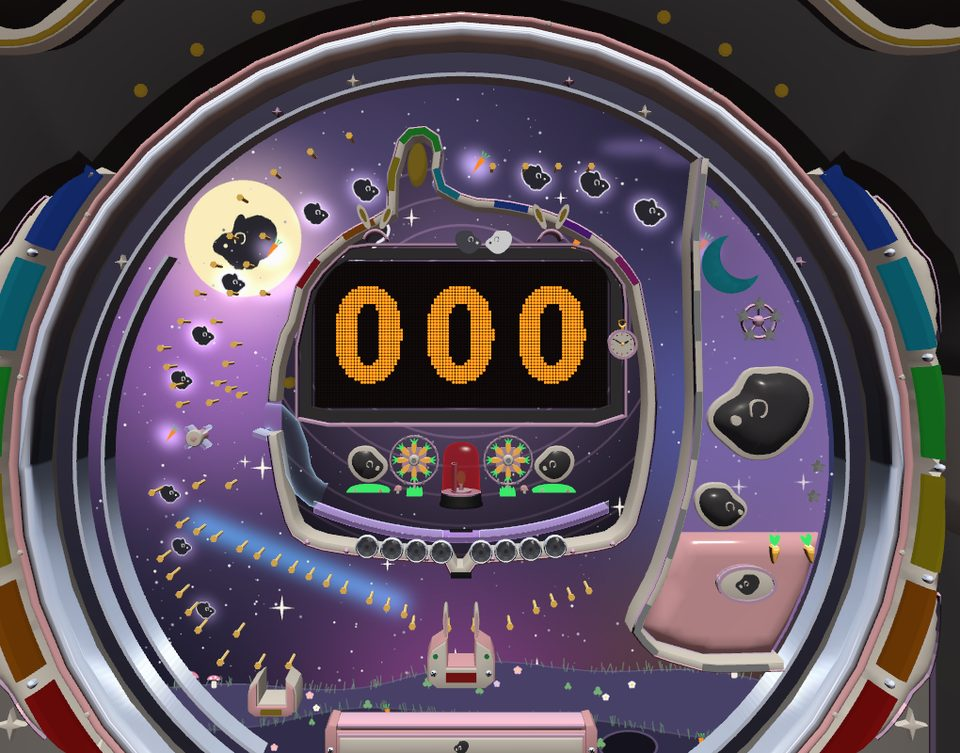
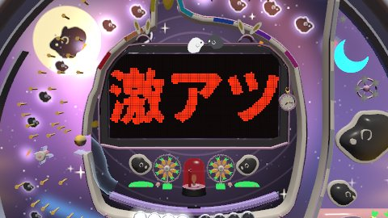
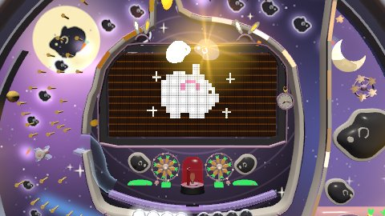
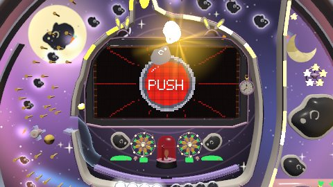

最終更新：2026-11-23（月）
RABBIT HOLE

当たりがすべてST10回に入る新台。左打ちのみ。島の表の列に6台。
スペック
| 大当り確率 | 1/99.0 |
|---|---|
| ST中 | 1/9.0 |
| ST | 10回（当たりはすべてST） |
| 継続率 | 約69% |
| ラウンド | 8R・3R（1R10カウント） |
| 出玉 | 8R約960個・3R約360個 |
| 賞球 | ヘソ3・電チュー3・アタッカー12・入賞口10 |
| 機械割 | 約141%（試算） |
※ボーダーは調査中。
大当り振り分け
| 入賞口 | 8R（ST） | 3R（ST） |
|---|---|---|
| ヘソ | 15% | 85% |
| 電チュー | 25% | 75% |
打ち方
- ずっと左打ち。盤面の右側は装飾で、右打ちは無い
- 強さは自動
- ヘソが電チューを兼ねていて、耳の形の羽根が開くと入りやすい
- スルーゲートは無い。打った玉の55%が普図の保留になる
| 通常 | ST中 | |
|---|---|---|
| 普図の当たり | 1/16 | 9/10 |
| 普図の変動 | 12秒 | 0.6秒 |
| 羽根の開放 | 0.15秒×1回 | 4.0秒×2回 |
ST（ラビットRUSH）
- 当たりのあとはST10回（1/9.0）。10回のうちに当たればまたST、外せば通常に戻る
- 入る時に「ラビットRUSH!」が出る
- ST中は液晶の縁を桃と白の光が回り、上の辺に残り回数。残り5回からカウントダウン
演出信頼度
信頼度はSTAR PARADEとそろえてあり、予告の名前だけが違う。
※信頼度は解析値（通常時）。50%以上と確定は赤字。
保留の色
| 色 | 信頼度 |
|---|---|
| 青 | 1.7% |
| 緑 | 7.3% |
| 赤 | 33.2% |
| 金 | 65.6% |
| 虹 | 確定 |
リーチ
| 演出 | 信頼度 |
|---|---|
| ノーマルリーチ | 3.1% |
| スーパーリーチ | 48.0% |
| 全回転 | 確定 |
| 最終決戦（PUSH） | 52.3% |
予告
| 色 | ニンジン風船予告 | うさぎの群れ予告 |
|---|---|---|
| 全体（色を問わず） | 1.3% | 19.4% |
| 白 | 0.2% | 3.7% |
| 青 | 0.7% | 10.8% |
| 緑 | 1.7% | 24.3% |
| 赤 | 6.2% | 54.7% |
| 金 | 23.5% | 84.7% |
| 虹 | 確定 | 確定 |
予兆（上を走るキャラ）
| 演出 | 信頼度 |
|---|---|
| なかま（3匹） | 1.1% |
| 大行進（6匹） | 2.6% |
| 金 | 13.7% |
| 虹 | 69.1% |
リーチ中の予告
| 演出 | 信頼度 |
|---|---|
| ニンジン風船予告 | 17.8% |
| うさぎの群れ予告 | 35.1% |
確定演出
虹の保留・ブラックアウト・変動開始時のパトランプ・復活・フリーズ・全消灯・うさぎの後ずさり
うさぎの後ずさりは、ノーマルリーチ中に上の帯のうさぎが後ろ向きに歩く演出。
ほかの演出はSTAR PARADEの演出信頼度を見ること。確変昇格チャンスは無い。
スーパーリーチの流れ（こま）




プレミア・隠し要素・小ネタ
プレミア（当たり確定）
| 演出 | 内容 |
|---|---|
| うさぎの後ずさり | ノーマルリーチ中、上の帯のうさぎが後ろ向きに歩く |
| ブラックアウト | 変動開始時に暗転し、パトランプが回る |
| フリーズ | 変動開始と同時に全部が止まって音が消え、光って確定 |
| 全消灯 | 液晶と台の電飾が全部消えて音もなくなり、光って確定 |
| 変動開始時のパトランプ | 回転の頭でパトランプが回る |
| 虹 | 虹保留・虹の予告（ニンジン風船・うさぎの群れ） |
| 全回転 | 333か777でそろう。最後まで回って虹のまま止まる |
| 復活 | スーパーではずれに見せてから当たる |
※ブラックアウト・フリーズ・全消灯は通常時だけ。
隠し要素
- 8R昇格：3Rの当たりの終わりに「昇格チャンス」が出て、3Rと8Rが入れかわるルーレットが回る。8Rで止まれば昇格。8Rの60%は3Rに見せてから昇格し、本当の3Rの25%は昇格に挑んで失敗する
- 保留の先読み：保留は入った時に本当の色より1〜2段下で見えることがある。待っている間に1段ずつ上がり、上がりきらない分は変動開始時のチャンスアップで上がる。変動開始時に白い保留がちらつくだけならガセ
- チャンスゾーン：先読みのゾーン。前に保留が2つ以上ある時に出る。はずれの時はスーパーリーチになる回だけ
小ネタ
- 予兆は上の帯を走るうさぎ。金で13.7%、虹で69.1%
- チャンス目311：リーチなしのはずれで311に止まると金色に光って跳ねる。60.7%。たまたま311で止まることはない
- ST中は予告・ステップアップ・擬似連・変動開始が出ない
- オカルト①〜⑤は効く（店の遊び方）
データカウンター

台の上に大当り・連チャン・スタート・前回の4つと呼び出しランプ。